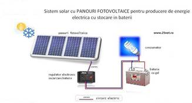

Sistemele solare fotovoltaice complete independente (off grid) pot fi realizate in topologie magistrala de curent alternativ (AC Bus) sau magistrala de curent continuu (DC Bus). Sistemele fotovoltaice de tip magistrala de curent continuu sunt utilizate pentru puteri nominale mici (pina la 1-2 kilowati) in timp ce sistemele de tip magistrala de curent alternativ nu sint limitate in ceea ce priveste puterea maxima.
Diferenta principala dintre sistemele solare fotovoltaice de tip magistrala de curent alternativ si cele de tip magistrala de curent continuu consta in modul in care este transformata energia de current continuu generata de panourile fotovoltaice in energie de curent alternativ necesara pentru alimentarea consumatorilor.
Sistemele fotovoltaice de tip magistrala de curent alternativ au o eficienta si un randament mult mai mare decit al sistemelor de tip magistrala de curent continuu pentru ca energia panourilor este transformata direct in energie de curent alternativ iar invertoarele de retea sunt prevazute cu algoritm de determinare si urmarire a punctului de putere maxima (MPPT).
Un sistem solar fotovoltaic de tip magistrala de curent alternativ are in compunere  un generator fotovoltaic, unul sau mai multe invertoare de retea, unul sau mai multe invertoare de baterii, o banc de acumulatori pentru stocarea energiei electrice, si optional un grup electrogen ca sursa de rezerva. Invertoarele de retea pentru aceste sisteme transforma energia de current continuu generata de panourile fotovoltaice in energie de current alternativ si o injecteaza direct in reteaua electrica a imobilului. Surplusul de energie generat in timpul zilei este stocat in acumulatori pentru a asigura necesarul de energie pe timpul noptii cu ajutorul invertoarelor de curent continuu.
un generator fotovoltaic, unul sau mai multe invertoare de retea, unul sau mai multe invertoare de baterii, o banc de acumulatori pentru stocarea energiei electrice, si optional un grup electrogen ca sursa de rezerva. Invertoarele de retea pentru aceste sisteme transforma energia de current continuu generata de panourile fotovoltaice in energie de current alternativ si o injecteaza direct in reteaua electrica a imobilului. Surplusul de energie generat in timpul zilei este stocat in acumulatori pentru a asigura necesarul de energie pe timpul noptii cu ajutorul invertoarelor de curent continuu.
Sistemul fotovoltaic de tip magistrala de curent continuu are in compunere un generator fotovoltaic, unul sau mai multe controlere de incarcare baterii, unul sau mai multe invertoare de baterii, o baterie de acumulatori pentru stocarea energiei electrice, si optional un grup electrogen ca sursa de rezerva.